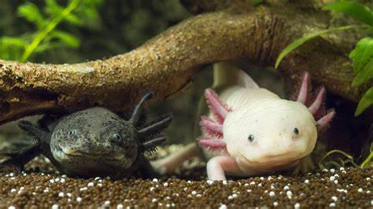

Ajolote mexicano
FAUNA

lo cierto es que estos anfibios mexicanos no
necesitan de ninguna fábula para mantener su fama:
son suficientemente impresionantes por sí solos gracias
a su capacidad de regenerar miembros perdidos y mantenerse
"jóvenes" durante toda su vida.
principal